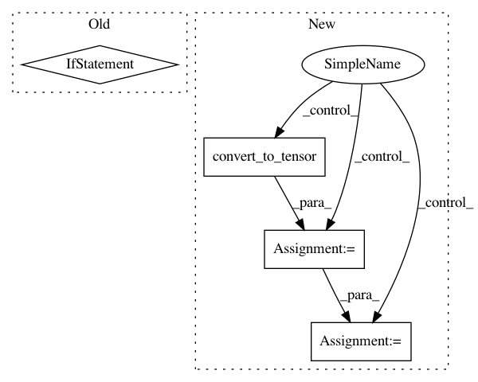

7d818d66a243aaf5d4e0f58e257087b0957a1086,keras/layers/preprocessing/table_utils.py,TableHandler,lookup,#TableHandler#Any#,119
Before Change
inputs = ragged_tensor.convert_to_tensor_or_ragged_tensor(inputs)
// Run the lookup operation on the converted tensor.
if tf_utils.is_ragged(inputs):
return self._ragged_lookup(inputs)
else:
return self._tensor_lookup(inputs)
def _eval(self, tensor):
if self.use_v1_apis:
return K.get_session().run(tensor)
else:
After Change
if tf_utils.is_ragged(inputs):
if isinstance(inputs, tf.compat.v1.ragged.RaggedTensorValue):
flat_values = tf.convert_to_tensor(
value=inputs.flat_values,
name="flat_values")
inputs = tf.RaggedTensor.from_nested_row_splits(
flat_values, inputs.nested_row_splits, validate=False)
return self._ragged_lookup(inputs)
// For normal tensor inputs
inputs = tf.convert_to_tensor(inputs)
In pattern: SUPERPATTERN
Frequency: 3
Non-data size: 4
Instances
Project Name: keras-team/keras
Commit Name: 7d818d66a243aaf5d4e0f58e257087b0957a1086
Time: 2021-01-13
Author: scottzhu@google.com
File Name: keras/layers/preprocessing/table_utils.py
Class Name: TableHandler
Method Name: lookup
Project Name: analysiscenter/batchflow
Commit Name: 11090e7cee138b00570d4afc09cb5779a95df131
Time: 2019-09-03
Author: Tsimfer.SA@gazprom-neft.ru
File Name: batchflow/models/tf/layers/core.py
Class Name: BaseDropout
Method Name: __call__
Project Name: tensorlayer/tensorlayer
Commit Name: 87aeace11d364ece7c8fae8ddab02786e5a2492e
Time: 2019-01-23
Author: zhangjqsmiling@gmail.com
File Name: tensorlayer/layers/core.py
Class Name: Layer
Method Name: __call__